Paz entre los árboles
"El hogar no solo es lugar donde "estar", sino un ecosistema que regule el pulso y la respiración como un bosque."
¿Por que un árbol nos calma? La ciencia tras la geometria y color de la hoja, y el aroma de la madera.
Es el punto donde el diseño interior deja de ser decorativo para volverse terapéutico. La idea es que el hogar no sea un espacio inerte, sino un organismo vivo que utiliza códigos biológicos (geometría, luz y química) para "hackear" positivamente nuestro cerebro y devolvernos el equilibrio que el entorno urbano nos quita.
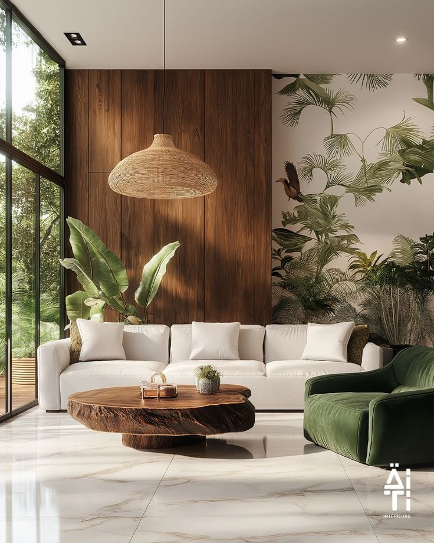
Imagen 1: La fuerza táctil de la corteza antigua.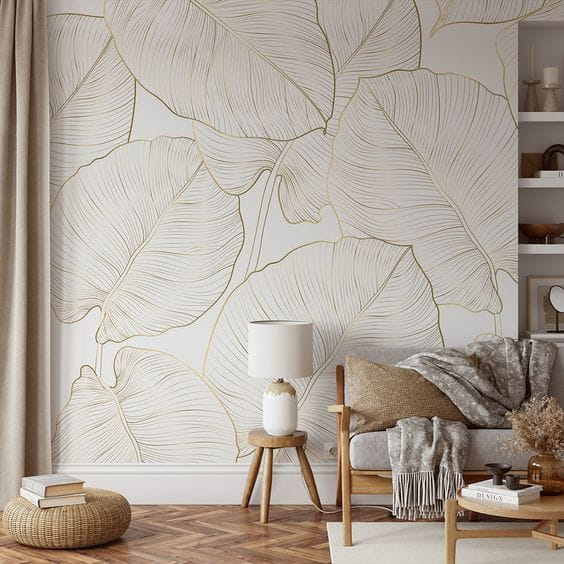
La Geometría de las Hojas
La paz que sentimos al mirar un árbol no es subjetiva, es matemática. Las hojas siguen patrones de geometría fractal (estructuras que se repiten a diferentes escalas). El cerebro humano procesa fractales naturales con un esfuerzo mínimo. Al introducir estos patrones en el hogar, bajamos la frecuencia de nuestras ondas cerebrales de alerta a relajación.
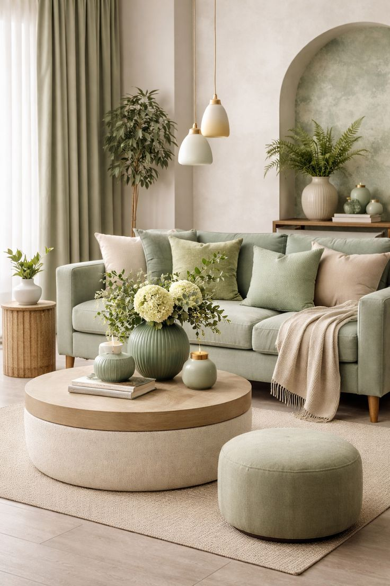
La ciencia del color
Imagina que tu ojo es un músculo que trabaja todo el día. El rojo lo obliga a tensarse y el azul a esforzarse por enfocar. El verde, en cambio, es el color que el ojo procesa con mayor facilidad. Al decorar con verdes, le estás dando a tus ojos un "asiento cómodo" donde descansar. Evolutivamente, nuestro cerebro asocia el verde con la vida y el agua.
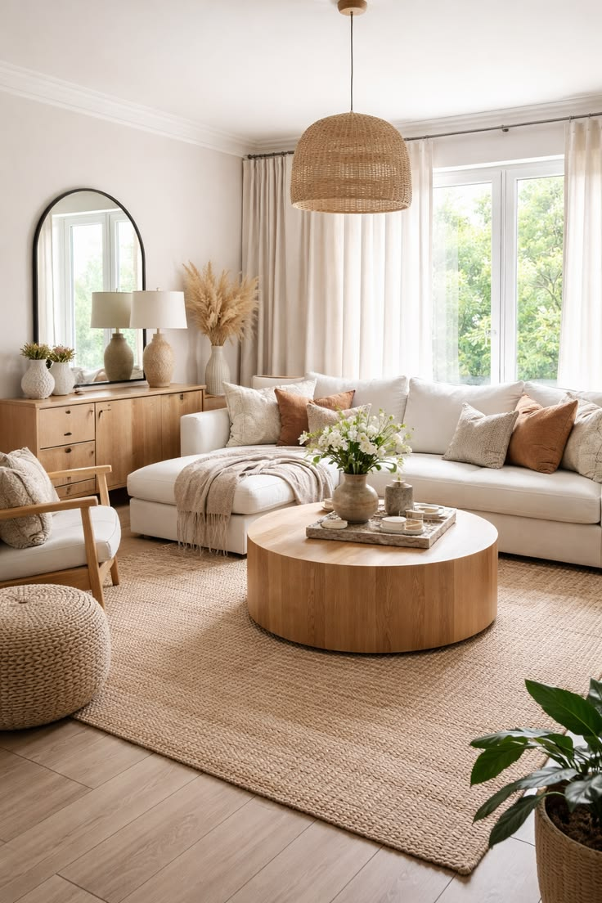
El aroma de la madera
La paz de los árboles entra en casa a través del olfato. El aroma de la madera natural es la 'capa invisible' de nuestro diseño; una fragancia que no se compra en frascos, sino que emana de los materiales nobles. Inhalar el perfume del cedro o del roble es una señal directa para que nuestro cerebro se relaje, recordándonos que estamos en un lugar seguro, orgánico y vivo.
Minimalismo orgánico
El Minimalismo Orgánico es el arte de quedarse con lo esencial, pero asegurándose de que ese "poco" sea natural y táctil. No se trata de tener una casa vacía, sino de tener una casa llena de texturas que inviten a ser tocadas. Es un estilo que prioriza el bienestar emocional sobre la perfección estética.
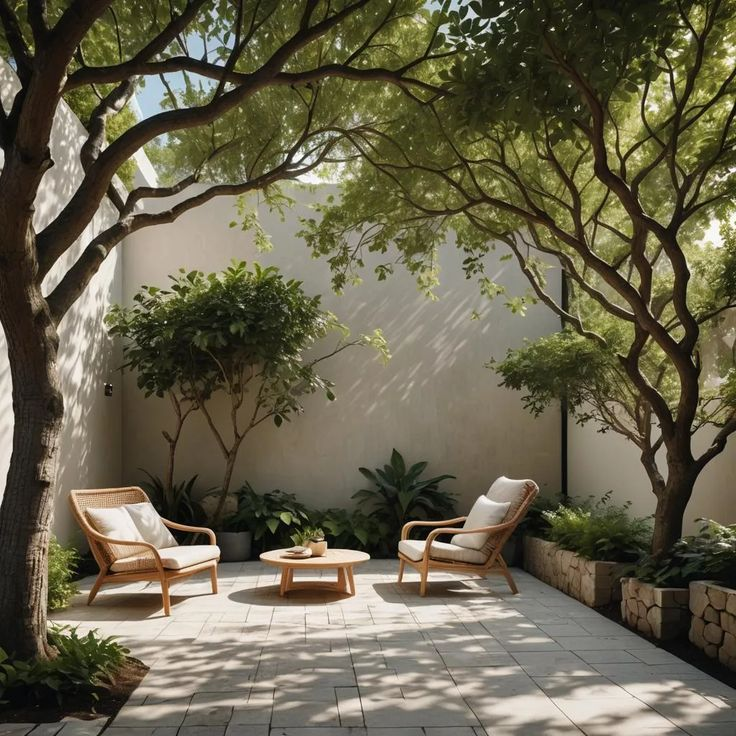
Imagen 1: La fuerza táctil de la corteza antigua.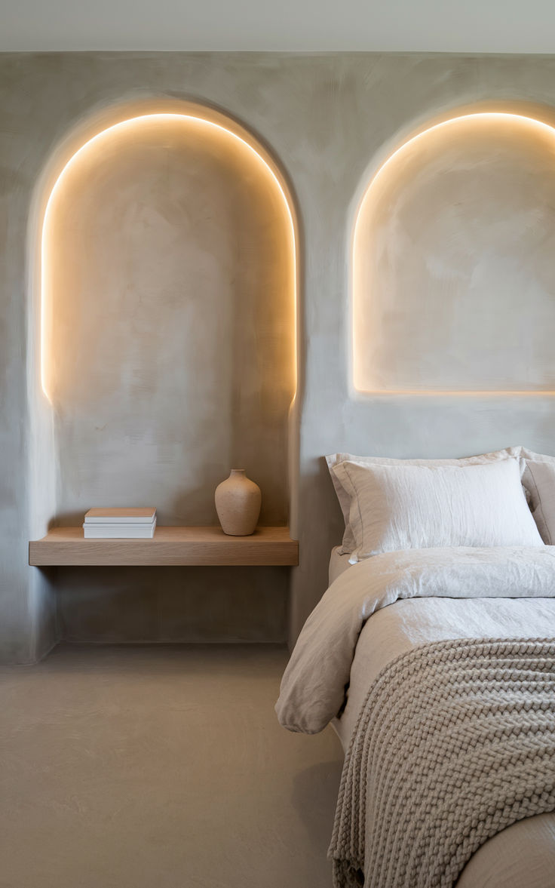
Adiós a las líneas rectas
En la naturaleza no existen las líneas rectas perfectas. En lugar de muebles con esquinas filosas, el minimalismo orgánico prefiere mesas de bordes redondeados, sofás curvos y siluetas que imitan la fluidez de una piedra de río o la rama de un árbol. Estas formas son visualmente más suaves y menos agresivas para el cerebro.
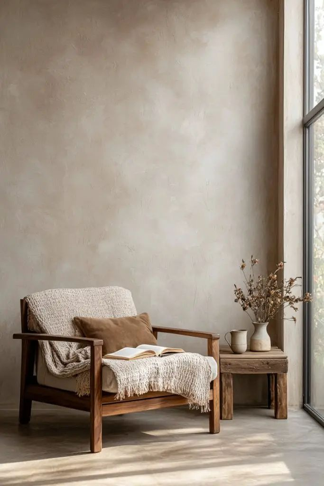
Honestidad táctil
La base de este estilo es la materia prima en su estado más puro. Madera con vetas y nudos visibles, lino arrugado, cerámica hecha a mano, piedra caliza y fibras vegetales (mimbre, yute). La "decoración" no es un objeto extra, sino la belleza del material mismo permitiendo que la naturaleza hable dentro del hogar.
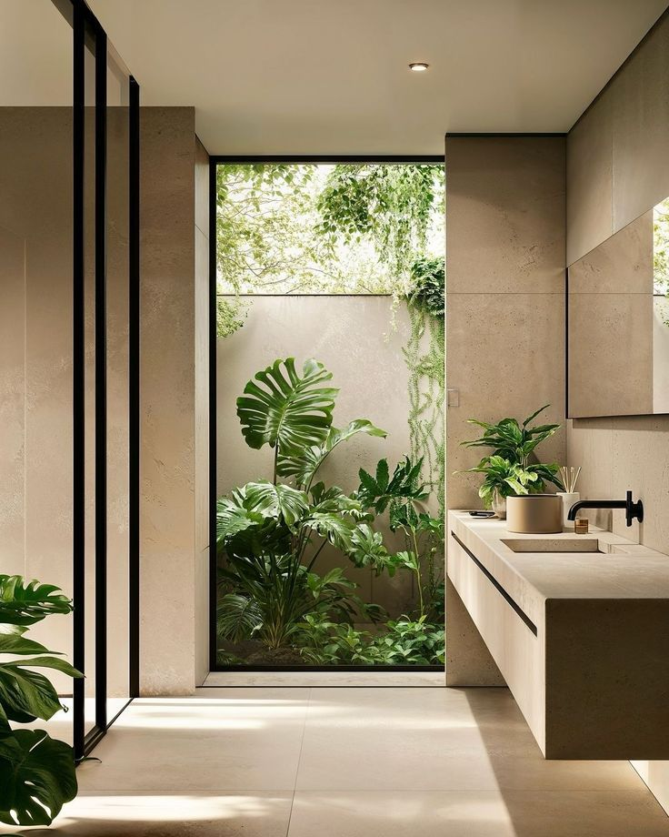
Vivir con lo que respiras
A diferencia del minimalismo industrial, aquí la vegetación es un elemento estructural, no un accesorio. Una sola planta de gran porte en una esquina tiene más impacto que diez adornos pequeños. Se busca que el espacio se sienta "aireado", permitiendo que la luz y el aire circulen como si estuviéramos en un claro del bosque.
La piel del hogar
La piel del hogar debe ser una invitación al tacto. El objetivo es sustituir las superficies frías y sintéticas por materiales que tengan una historia orgánica. Cuando nuestra piel entra en contacto con fibras naturales, el sistema nervioso recibe una señal de relajación inmediata.
Maderas de Poro Abierto
Para que la madera "respire" y mantenga su aroma, evitamos los barnices plásticos y brillantes. Preferimos aceites y ceras que permitan sentir la veta y el relieve natural. Aporta una calidez que estabiliza el pulso.
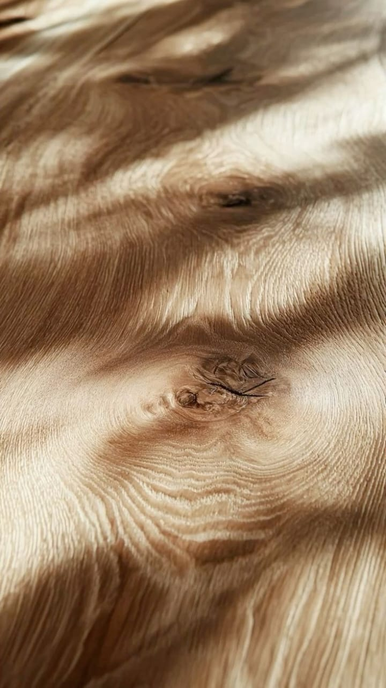
Textiles con Memoria
El lino y el algodón crudo son los encargados de suavizar las aristas. Al ser tejidos que "arrugan" con naturalidad, nos enseñan a aceptar la imperfección orgánica, eliminando la rigidez del minimalismo tradicional.
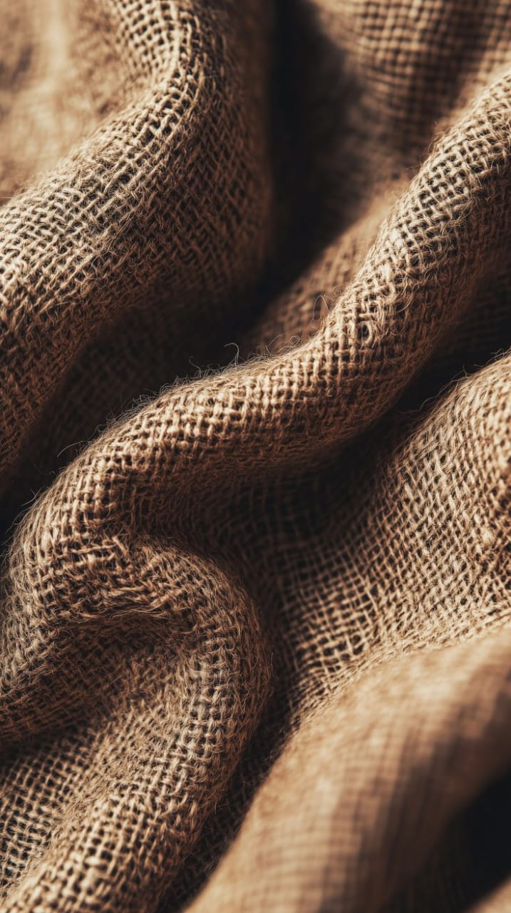
Piedra y Barro
Son los elementos que nos anclan a la tierra. Una pared de piedra caliza o una pieza de cerámica artesanal introducen una temperatura y una solidez que nos hacen sentir protegidos, como si las paredes fueran una extensión de la montaña.
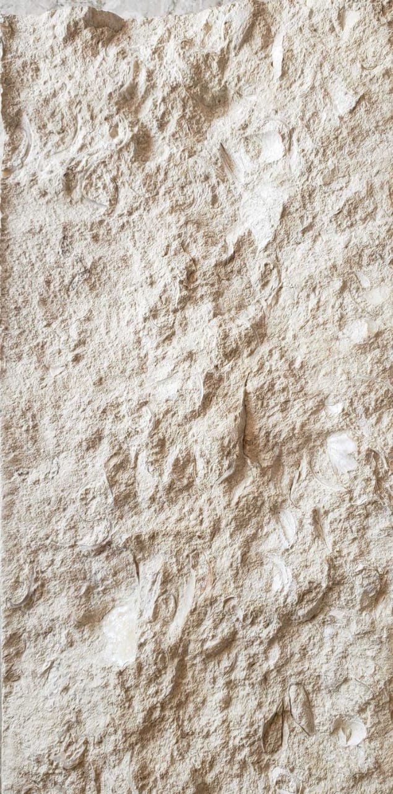
Esculpir con luz
Busca lámparas que desaparezcan en el espacio o que parezcan objetos naturales:
Luz "Bañado de Pared" (Wall Washers):
Son focos que se dirigen hacia la pared, no hacia el suelo. Ideales para resaltar la textura de una pared de piedra o madera.
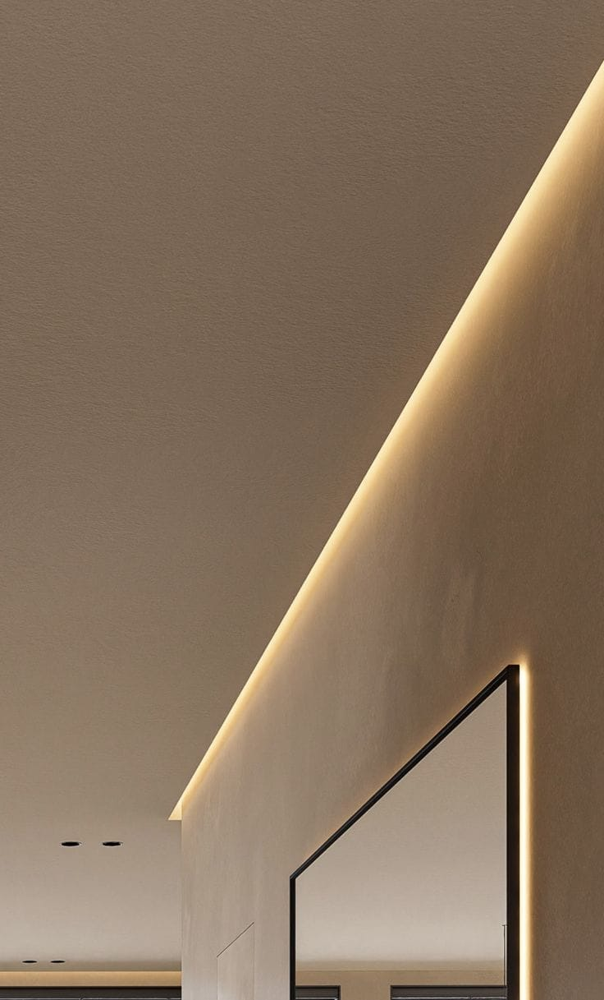
Lámparas de Pie de Arco o Fibras:
Con pantallas de ratán, mimbre o papel. Al encenderlas, el trenzado proyecta sombras que imitan el movimiento de las ramas.
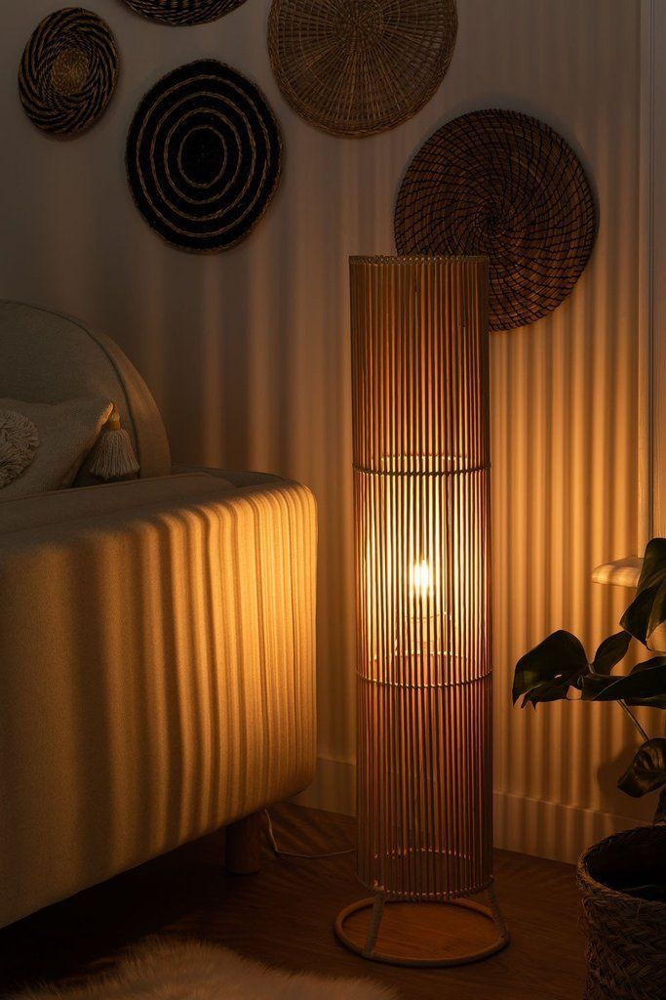
Tiras LED Cálidas (Ocultas):
Colocadas detrás de un cabecero, bajo un estante de madera o en el zócalo del suelo para crear un "aura" de luz que parece emanar del material.
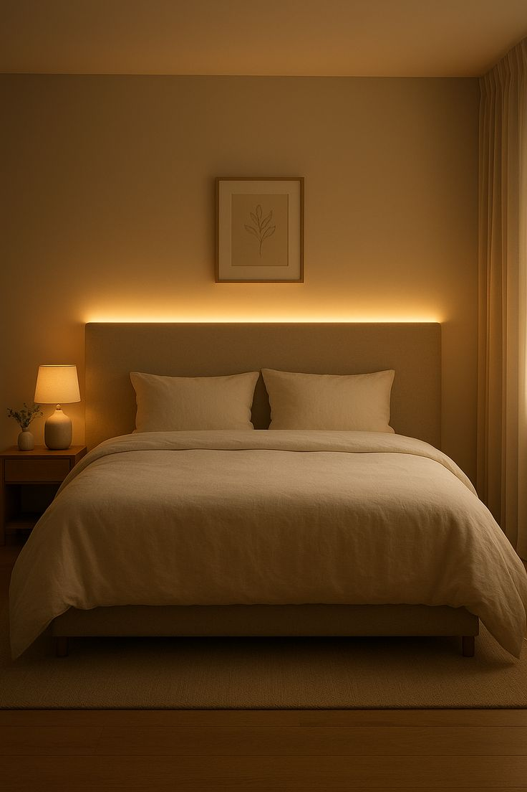
Diseñar para vivir, diseñar para estar bien
En este primer número hemos aprendido que la naturaleza es nuestra mejor guía. Al final del día, lo más valioso de un hogar no es cómo se ve, sino cómo te hace sentir. Porque tu bienestar es muy importante para nosotros, te invitamos a que cada cambio en tu casa sea un paso hacia una vida más lenta, más orgánica y más feliz.
Unirme a la Comunidad